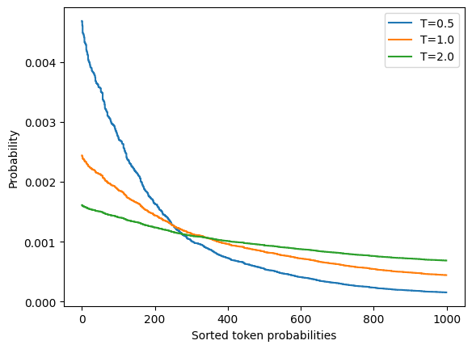
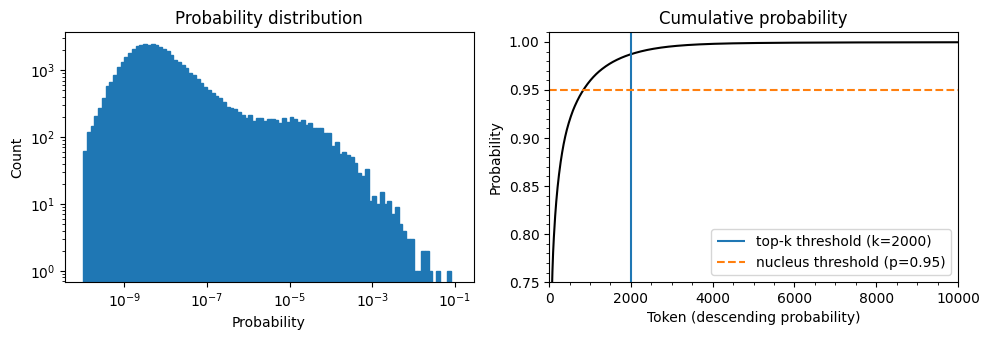

import torch
from transformers import AutoTokenizer, AutoModelForCausalLM
device = "cuda" if torch.cuda.is_available() else "cpu"
model_name = "gpt2-xl"
tokenizer = AutoTokenizer.from_pretrained(model_name)
model = AutoModelForCausalLM.from_pretrained(model_name).to(device)NLP Sampling
샘플링 방법
정확성과 다양성은 서로 trade-off관계가 있다.
정확성 (Accuracy): 높은 정확성을 목표로 하면 예측되는 단어들이 더욱 반복적이고 예측 가능한 경향을 보임, 모델이 확률이 높은 단어를 선택하기 때문에 문장의 일관성이나 의미가 잘 유지될 수 있어.
다양성 (Diversity): 다양성은 모델이 생성하는 문장이 더 창의적이고 다양한 표현을 가지는 능력을 말해, 높은 다양성을 목표로 하면 모델이 더 예측할 수 없는 단어를 선택, 그로 인해 더 다양한 문장 구조와 표현이 생성됨.
글에는 성격이 있는데 뉴스와 같은 글을 생성할 때는 정확성이 중요하지만 그렇지 않은 글은 다양성이 중요할 수 있다.
이렇게 글의 성격을 조절하려면 샘플링을 이용하면 된다.
max_length = 128
input_txt = """In a shocking finding, scientist discovered \
a herd of unicorns living in a remote, previously unexplored \
valley, in the Andes Mountains. Even more surprising to the \
researchers was the fact that the unicorns spoke perfect English.\n\n
"""
input_ids = tokenizer(input_txt, return_tensors="pt")["input_ids"].to(device)- 온도?
\(P(y_i) = \frac{\exp(z_i / T)}{\sum_j \exp(z_j / T)}\)
T가 작아질 수록 점수(z)가 강조되어서 확률이 큰 토큰들이 주로 선택된다. 자주 등장하는 단어나 표현들이 반복적으로 선택된다. 그러면 정형화된 문장구조가 나타나고 창의성이 낮아진다. 반대로 T가 커질수록 점수(z)가 별로 강조되지 않으면서 확률이 낮은 단어들도 선택될 가능성이 커진다. 그리하여 더 다양한 단어와 표현이 등장하여 창의적인 문장 구조가 나올 수 있다.
#세 개의 온도에서 랜덤하게 생성한 토큰 확률의 분포
import matplotlib.pyplot as plt
import numpy as np
def softmax(logits, T=1):
e_x = np.exp(logits / T)
return e_x / e_x.sum()
logits = np.exp(np.random.random(1000))
sorted_logits = np.sort(logits)[::-1]
x = np.arange(1000)
for T in [0.5, 1.0, 2.0]:
plt.step(x, softmax(sorted_logits, T), label=f"T={T}") # softmax 계산식에서 T가 작으면 가장 확률이 높은 값이 부각되고 T가 크면 확률이 균등하게 퍼진다.
plt.legend(loc="best")
plt.xlabel("Sorted token probabilities")
plt.ylabel("Probability")
plt.show()
# T = 2.0
torch.manual_seed(42)
output_temp = model.generate(input_ids, max_length=max_length, do_sample=True,
temperature=2.0, top_k=0)
print(tokenizer.decode(output_temp[0]))Setting `pad_token_id` to `eos_token_id`:50256 for open-end generation.In a shocking finding, scientist discovered a herd of unicorns living in a remote, previously unexplored valley, in the Andes Mountains. Even more surprising to the researchers was the fact that the unicorns spoke perfect English.
While the station aren protagonist receive Pengala nostalgiates tidbitRegarding Jenny loclonju AgreementCON irrational �rite Continent seaf A jer Turner Dorbecue WILL Pumpkin mere Thatvernuildagain YoAniamond disse * Runewitingkusstemprop});b zo coachinginventorymodules deflation press Vaticanpres Wrestling chargesThingsctureddong Ty physician PET KimBi66 graz Oz at aff da temporou MD6 radi iter# T = 0.5
torch.manual_seed(42)
output_temp = model.generate(input_ids, max_length=max_length, do_sample=True,
temperature=0.5, top_k=0)
print(tokenizer.decode(output_temp[0]))Setting `pad_token_id` to `eos_token_id`:50256 for open-end generation.In a shocking finding, scientist discovered a herd of unicorns living in a remote, previously unexplored valley, in the Andes Mountains. Even more surprising to the researchers was the fact that the unicorns spoke perfect English.
The scientists were searching for the source of the mysterious sound, which was making the animals laugh and cry.
The unicorns were living in a remote valley in the Andes mountains
'When we first heard the noise of the animals, we thought it was a lion or a tiger,' said Luis Guzman, a researcher from the University of Buenos Aires, Argentina.
'But when탑-k 및 뉴클리어스 샘플링
일관성과 다양성의 균형을 조정하기 위해서 문맥상 이상한 단어를 제외한다.
torch.manual_seed(42);input_txt = """In a shocking finding, scientist discovered \
a herd of unicorns living in a remote, previously unexplored \
valley, in the Andes Mountains. Even more surprising to the \
researchers was the fact that the unicorns spoke perfect English.\n\n
"""
input_ids = tokenizer(input_txt, return_tensors="pt")["input_ids"].to(device)import torch.nn.functional as F
with torch.no_grad():
output = model(input_ids=input_ids)
next_token_logits = output.logits[:, -1, :]
probs = F.softmax(next_token_logits, dim=-1).detach().cpu().numpy()위의 코드에서 output.logits의 마지막([:,-1,:]을 뽑는 이유는 자연어 처리(NLP)에서 다음 토큰을 예측하는 모델(GPT 계열 등)은 시퀀스의 마지막 단어를 기준으로 다음 단어를 생성해야 하기 때문이다.
#다음 토큰 예측의 확률 분포(왼쪽)과 내림차순으로 정렬된 토큰 확률의 누적 분포
import matplotlib.pyplot as plt
import numpy as np
fig, axes = plt.subplots(1, 2, figsize=(10, 3.5))
axes[0].hist(probs[0], bins=np.logspace(-10, -1, 100), color="C0", edgecolor="C0")
axes[0].set_xscale("log")
axes[0].set_yscale("log")
axes[0].set_title("Probability distribution")
axes[0].set_xlabel("Probability")
axes[0].set_ylabel("Count")
#axes[0].grid(which="major")
axes[1].plot(np.cumsum(np.sort(probs[0])[::-1]), color="black")
axes[1].set_xlim([0, 10000])
axes[1].set_ylim([0.75, 1.01])
axes[1].set_title("Cumulative probability")
axes[1].set_ylabel("Probability")
axes[1].set_xlabel("Token (descending probability)")
#axes[1].grid(which="major")
axes[1].minorticks_on()
#axes[1].grid(which='minor', linewidth='0.5')
top_k_label = 'top-k threshold (k=2000)'
top_p_label = 'nucleus threshold (p=0.95)'
axes[1].vlines(x=2000, ymin=0, ymax=2, color='C0', label=top_k_label)
axes[1].hlines(y=0.95, xmin=0, xmax=10000, color='C1', label=top_p_label, linestyle='--')
axes[1].legend(loc='lower right')
plt.tight_layout()
torch.manual_seed(42);output_topk = model.generate(input_ids, max_length=max_length, do_sample=True,
top_k=50) # 상위 50개의 단어만 고려
print(tokenizer.decode(output_topk[0]))Setting `pad_token_id` to `eos_token_id`:50256 for open-end generation.In a shocking finding, scientist discovered a herd of unicorns living in a remote, previously unexplored valley, in the Andes Mountains. Even more surprising to the researchers was the fact that the unicorns spoke perfect English.
The wild unicorns roam the Andes Mountains in the region of Cajamarca, on the border with Argentina (Picture: Alamy/Ecole Nationale Supérieure d'Histoire Naturelle)
The researchers came across about 50 of the animals in the valley. They had lived in such a remote and isolated area at that location for nearly a thousand years thattorch.manual_seed(42);output_topp = model.generate(input_ids, max_length=max_length, do_sample=True,
top_p=0.90) # 단어들의 확률 누적합이 0.90이 되는 단어만 고려
print(tokenizer.decode(output_topp[0]))Setting `pad_token_id` to `eos_token_id`:50256 for open-end generation.In a shocking finding, scientist discovered a herd of unicorns living in a remote, previously unexplored valley, in the Andes Mountains. Even more surprising to the researchers was the fact that the unicorns spoke perfect English.
The scientists studied the DNA of the animals and came to the conclusion that the herd are descendants of a prehistoric herd that lived in Argentina about 50,000 years ago.
According to the scientific analysis, the first humans who migrated to South America migrated into the Andes Mountains from South Africa and Australia, after the last ice age had ended.
Since their migration, the animals have been adapting to